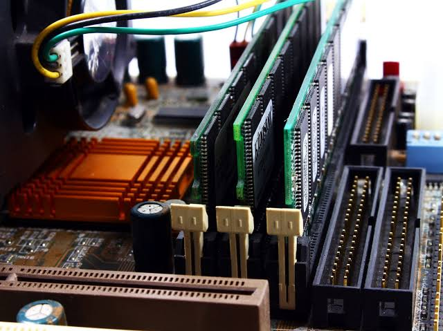

Random Access Memory
Random access memory (RAM) is a
high-speed component in devices that temporarily stores all informationa
device needs for the present and future. It's a type of computer memory that can be randomly accessed,
meaning any byte of memory can be accessed without the preceeding bytes.
Ram is a volatile memory that is its contents are lost once there is power failure unless such contents are saved to
secondary storage device . It is also the basic of semiconductor memory used for temporary storage of data
or programs during processing. the speed and performance of a system is directly correlated with the
amount of RAm installed. Ram stores the information a computer is actively using, so it can be accessed quickly.

Go To